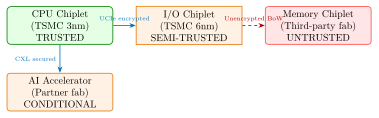
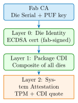

Chapter 39: Chiplet and Heterogeneous Integration Security¶
Note: Chiplets disaggregate a monolithic SoC into multiple dies connected by a high-speed die-to-die interconnect. While enabling cost-effective scaling, chiplet architectures introduce new trust boundaries, supply chain risks, and physical attack surfaces that monolithic designs do not face.
The chiplet revolution—driven by TSMC’s CoWoS, Intel Foveros, and AMD’s EMIB— fundamentally changes the hardware security landscape. When a single package contains dies from multiple vendors, manufactured in different fabs, across different continents, each die-to-die link becomes a potential trust boundary and attack surface.
39.1 Chiplet Architecture Overview¶
39.1.1 Key Interconnect Standards¶
| Standard | Bandwidth | Range | Security Support |
|---|---|---|---|
| UCIe 1.1 (2023) | 32 Gb/s/mm | \(<\)2mm | Optional AES-256-GCM encryption+auth |
| BoW (Open) | 112 Gb/s | \(<\)1mm | No native security |
| AIB (Intel) | 2 Gb/s/pin | \(<\)10mm | Integrity bits only |
| HBM3 | 1.2 TB/s | Stacked | Per-channel ECC; no encryption |
| CXL 3.0 | 256 GB/s | \(<\)10m PCIe | AES-256-GCM IDE encryption |
39.1.2 Trust Zones in a Chiplet Package¶

39.2 Security Threats in Chiplet Systems¶
39.2.1 Die-to-Die (D2D) Interconnect Attacks¶
Unlike monolithic on-chip buses, die-to-die interconnects are accessible with physical probing equipment:
- Passive Probing
- High-bandwidth oscilloscope (100+ GHz Keysight DSA-Z or Tektronix DPO70000SX) with ground-signal probes can capture UCIe or BoW signals at the package edge if the interposer is exposed.
- Active Interposer Substitution
- Replace a legitimate passive interposer with a malicious active interposer that intercepts, modifies, or replays die-to-die transactions. Demonstrated by researchers at MIT Lincoln Labs (2022).
- Differential Power Analysis on D2D
- The simultaneous switching of 1000+ UCIe lanes creates measurable power signatures correlating with bus data.
Warning: Unencrypted die-to-die interconnects (BoW, early AIB) expose all data exchanged between chiplets to an attacker with package-level physical access. For security-sensitive data (keys, plaintext, attestation) always mandate UCIe with AES-256-GCM or a CXL IDE-equivalent link.
39.2.2 Supply Chain Threats Specific to Chiplets¶
| Threat | Chiplet-Specific Vector | Countermeasure |
|---|---|---|
| Malicious third-party chiplet | Untested chiplet from untrusted fab inserted into multi-die package | SPDM attestation of each die; AS6081 procurement |
| Counterfeit chiplet | Legitimate chiplet replaced with lower-grade die | PUF-based die identity; X-ray verification |
| Malicious interposer | Active silicon interposer with embedded hardware Trojan | Electrical testing; X-ray CT of assembled package |
| Side-channel via shared substrate | Thermal or EM crosstalk between dies exposes secrets | Physical isolation; thermal shield layers |
| Memory chiplet extraction | HBM3 stacked die removed and read off-chip | Per-granule encryption on memory die |
39.2.3 HBM Security¶
High Bandwidth Memory (HBM3, JEDEC JESD238) is stacked directly on the die using Through-Silicon Vias (TSVs). Security concerns:
-
HBM3 does not natively encrypt data. An attacker with access to the package (FIB, interposer probing) can read memory contents.
-
NVIDIA H100’s Memory Encryption Engine (MEE) provides AES-XTS-256 between the SXM5 die and HBM3 stacks, implementing inline encryption in the memory controller.
-
AMD MI300X (2024) integrates CPU+GPU dies in the same package, sharing HBM3; AMD SEV-SNP encryption covers the HBM3 address space.
39.3 UCIe Security (Universal Chiplet Interconnect Express)¶
UCIe 1.1 (2023) defines an optional but strongly recommended security layer above the physical/adapter layer. The security stack uses:
39.3.1 UCIe Security Architecture¶
-
Die Authentication (D-Auth): ECDSA-P384 or CRYSTALS-Dilithium identity proof at link initialization. Each die presents a certificate chain to its peer.
-
Link Encryption: AES-256-GCM with a 96-bit nonce per packet. Key agreement via X25519 (or CRYSTALS-Kyber for post-quantum).
-
Replay Protection: 48-bit sequence number; out-of-order packets generate security alerts.
-
Key Refresh: Session keys rotated every \(2^{32}\) packets (\(\sim\)4 billion) to maintain GCM nonce uniqueness.
/* Die A (initiator) initiates secure session with Die B */
/* Step 1: Exchange ephemeral X25519 keys */
uint8_t eph_privA[32], eph_pubA[32];
x25519_keygen(eph_privA, eph_pubA);
ucie_send(DIE_B, MSG_KEY_EXCHANGE, eph_pubA, 32);
uint8_t eph_pubB[32];
ucie_recv(DIE_B, MSG_KEY_EXCHANGE, eph_pubB, 32);
/* Step 2: ECDH shared secret */
uint8_t shared[32];
x25519(shared, eph_privA, eph_pubB);
/* Step 3: HKDF to derive AES-256-GCM keys */
uint8_t key_A2B[32], key_B2A[32];
hkdf_sha256(shared, "UCIe-D2D-A2B", key_A2B, 32);
hkdf_sha256(shared, "UCIe-D2D-B2A", key_B2A, 32);
/* Step 4: Authenticate dies (ECDSA-P384 certificate exchange) */
ucie_send_certificate(DIE_B, die_cert_chain);
ucie_verify_certificate(recv_cert, trusted_CA_pubkey);
/* All subsequent UCIe packets encrypted + authenticated */
39.4 Chiplet Identity and Attestation¶
Each chiplet must have a unique, unforgeable identity. The proposed architecture (IEEE P3164 Chiplet Security Working Group, 2023–2024):
39.4.1 DICE-based Chiplet Identity¶
The TCG DICE (Device Identity Composition Engine) Layering Architecture maps naturally to chiplet stacks:
-
Layer 0 – Immutable Die Identity: PUF-derived root key burned at wafer sort. Certificate issued by the fab.
-
Layer 1 – Package-Level Composition: The host die’s security controller measures all peer dies via D2D authentication and composes a compound device identity (CDI).
-
Layer 2 – System-Level Attestation: The CDI is bound to a TPM/RoT attestation chain, proving the full chiplet composition to a remote verifier.

39.5 FPGA Implementation: Secure D2D Controller¶
| Component | FPGA Platform | Resources | Notes |
|---|---|---|---|
| AES-256-GCM D2D engine | Xilinx Alveo U280 | 4,800 LUTs, 4 BRAMs | 25 Gb/s per lane |
| UCIe Security Controller | Intel Agilex 7 | 12,000 LUTs | Full D-Auth + encryption |
| ECDSA-P384 Die Auth | Artix-7 XC7A100T | 6,500 LUTs | 4ms handshake |
| Replay Detector | Artix-7 | 800 LUTs | 48-bit seq, \(<\)1 cycle latency |
| HBM3 MEE Prototype | Xilinx HBM Alveo | 8,200 LUTs | AES-XTS research |
39.6 ASIC Implementation Data¶
| Product | Process | D2D Security | Bandwidth | Power |
|---|---|---|---|---|
| AMD EPYC Genoa (Zen 4) | TSMC 5nm | Infinity Fabric encrypted | 1.5 TB/s | 360 W |
| Intel Sapphire Rapids (TDX) | Intel 7 | EMIB + PCIe IDE | 400 GB/s | 350 W |
| NVIDIA H100 SXM5 | TSMC 4N | AES-XTS-256 HBM | 3.35 TB/s | 700 W |
| Apple M3 Ultra (UCIe) | TSMC 3nm | Apple proprietary D2D enc | 800 GB/s | 60 W |
| Intel Ponte Vecchio | Intel 7+EMIB | Encrypted EMIB links | 408 GB/s | 600 W |
39.7 Chiplet Security Ecosystem and Standards¶
| Standard/Tool | Organization | Scope |
|---|---|---|
| UCIe 1.1 Security Annex | UCIe Consortium | D2D authentication and encryption spec |
| IEEE P3164 | IEEE | Chiplet security requirements working group (2023–) |
| JEDEC JEP106 | JEDEC | Manufacturer ID for supply chain traceability |
| AS6081 | SAE International | Counterfeit electronic parts avoidance |
| SEMI E187 | SEMI | Cybersecurity standard for semiconductor fabs |
| CXL 3.0 IDE | CXL Consortium | AES-256-GCM IDE for CXL memory expansion |
| JEDEC HBM3 | JEDEC | HBM3 spec; ECC but no encryption defined |
| PCIe CMA/SPDM | PCI-SIG | Per-device measurement + authentication |
| CHIPS Act NSTC | US DoC | Trusted fab certification for DoD chiplets |
39.8 Recent Developments (2024–2026)¶
39.8.1 UCIe 2.0 Security Enhancements (2025)¶
The UCIe 2.0 specification (expected Q2 2025) adds:
-
Post-quantum key agreement (X-Wing hybrid: X25519 + ML-KEM-768) as default in the security handshake
-
Multi-party authentication: packages with 3+ chiplets establish a group session key with a single handshake round
-
Hardware attestation integration: UCIe security controller exports SPDM 1.3 measurements to the host RoT
-
Die revocation: signed revocation lists distributed to UCIe controllers to block known-compromised chiplet certificates
39.8.2 IEEE P3164 Chiplet Security Standard (2024 Draft)¶
IEEE P3164 Working Group (formed 2023) published its first draft standard in 2024, covering:
-
Mandatory PUF-based die identity for Class A (secure) chiplets
-
D2D link encryption requirements at three assurance levels
-
Test-access security: blocking JTAG chain traversal across trust domains
-
Supply chain traceability: die-level serialization and certificate issuance
39.8.3 CHIPS Act Trusted Fab Certification¶
The US CHIPS and Science Act (2022) created a Trusted Foundry certification programme administered by NSTC (National Semiconductor Technology Center):
-
DoD-grade chiplets must originate from TSMC Arizona, Intel Ohio, or Samsung Texas fabs (all receiving CHIPS Act funding with security requirements)
-
Fab security requirements: secure design data transfer, cleared personnel for classified designs, anti-tamper measures on process equipment
-
Chiplet provenance chains must be cryptographically signed by the fab and included in HBOM (Hardware Bill of Materials)
Note: The HBOM (Hardware Bill of Materials) concept, analogous to SBOM for software, is gaining traction in 2024–2025. NTIA is developing HBOM guidance under the Biden/Biden-Harris Executive Order on supply chain security. An HBOM for a chiplet-based CPU would include: die manufacturer, fab, process node, mask set revision, and cryptographic die certificate hash.
Exercises
-
A chiplet package contains a CPU die (trusted fab) connected to a memory controller die (overseas fab) via an unencrypted BoW interconnect. Describe three attack vectors this creates and suggest mitigations for each.
-
UCIe 1.1 uses AES-256-GCM for link encryption. At 32 Gb/s bandwidth, calculate the maximum number of packets before nonce reuse occurs, assuming a 96-bit nonce with 32-bit sequence numbers and 128-bit packet granularity.
-
Explain the DICE layering model for chiplet attestation. If Die B (memory controller) is compromised after manufacture, how would Layer 1 composition detect this during system boot?
-
Compare the security implications of HBM3 stacked in a 2.5D interposer vs. 3D stacked directly on the die using TSVs. Which is harder to probe and why?
-
An attacker replaces a legitimate UCIe-attached AI accelerator chiplet with a malicious clone that supports the same D2D interface. What UCIe security feature (introduced in UCIe 1.1) would detect this substitution? What is the root of trust for this detection?
-
The AS6081 standard defines counterfeit electronic parts avoidance. List three specific measures an OEM assembling a chiplet-based server SoC should implement to comply with AS6081.
-
Design a security architecture for a chiplet-based SoC destined for a satellite payload. The SoC contains: compute die (trusted US fab), RF transceiver die (European fab), memory die (Taiwanese fab). Define the trust model, D2D encryption requirements, and attestation chain.